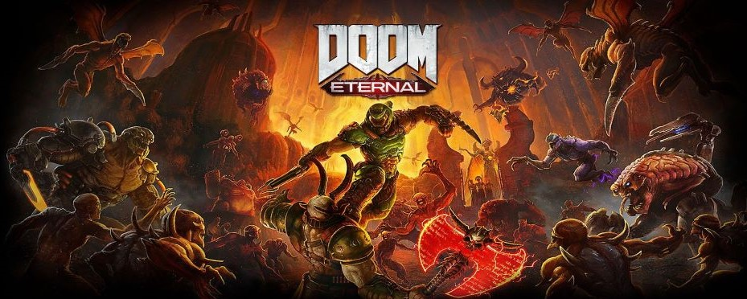

Parsnip's Reel Talk
Doom Eternal campaign
After having to wait through the whole Update 1 situation for Doom eternal, I have finally been able to get my hands-on Doom Eternal for myself, and see what the game is like. Is this a step forward for this new version of Doom or did they screw it up? For this review I will only be talking about the single-player for Doom Eternal as I had no interest in playing online.
The gameplay in Doom Eternal is a massive step forward when compared to Doom 2016, the combat is much faster, the new glory kills are nice and quick, especially when you apply a rune which makes the glory kills even faster. The gameplay dose has many improvements over Doom 2016, one such noticeable improvement is that after a glory kill the player is able to move immediately after the animation finishes, which was a major issue in Doom 206 as it was the cause for many of my deaths in ultra-nightmare. With the added flame belch to replenish armor is something that Doom really needed as there was a way to gain health but armor you need to find it in the world. The chainsaw now recharges up to one charge, because In Doom Eternal your ammo capacity, is much smaller than in Doom 2016. This forces the player to use more of the weapons on offer, as with Doom 2016 as soon as you got the super shotgun or the rocket launcher then that’s all you had to rely on the game never forced you to have to rely on the other weapons, but in Eternal you do and each weapon has a demon it’s strong against. There is also the ability to remove some of the demons’ weapons such as the Revenant you can shoot of both it’s rocket launchers, the Mancubus you can destroy it’s arm weapons, and with one grenade shot from the combat shotgun can put the cacodemon in to stagger for an easy glory kill.
Another addition to Doom eternal is the implication of a 1-up system, where scattered throughout a level are some extra lives, which are used to keep you going in a fight, so if the player gets in to a fight they are having trouble in, than when they die a 1-up will be used and the fight continues from where you died with not pause or loading screening breaking up the flow of combat, this allows players an opportunity to be able to push on past a difficult sections, 1-ups can be gathered in any mission multiple times if the player is willing to run through a level multiple times.
I do not know why but on some levels there is this purple gunk on some of the levels that I do not know why but on some levels there is this purple gunk on some of the levels that takes away your ability to jump and dash, which does not work for this game at all it takes away one of the only ways to keep yourself alive, likely it's not used too much but when it is, it's annoying and puts the player at a massive disadvantage even on the much higher difficulties where mistakes are far more punishing, hopefully if there is a next Doom game the purple gunk won’t return, it just feels unnecessary.
The sound effects for each of the guns is nice and the thump of the combat shotgun is nice a meaty, the thumps of the heavy rifle are lighter than the combat shotgun but are still very satisfying. The music is really good, each song fits the mission it’s played on, even the battle songs are good, they help keep the tension high for the player. The music is one of the best parts of this game, the composer Mike Gordon did an Amazing job creating the songs for this game, they all fit the feel of the game perfectly, and really add to the combat of the game.
The character designs have changed since doom 2016, many of the demons have been altered to look more like their doom 2 design, which I’m happy they did for the zombie soldiers, the Mancubus as well as the imps, Cacodemons. I personally never had a problem with the demons’ designs except the zombie soldiers, they just didn’t sit right with me.
The story, this is rather hard to talk about since the story just like on most of Doom games takes a back seat to the gameplay, but there is a story, with cutscenes that takes you out of the DoomSlayer’s helmet, the voice acting is good for the game, even the Doomslayer’s voice actor dose a good job for the few lines he’s given.
There is only one problem I had with Doom Eternal and that’s the marauder enemy and the reason is that when you fight him you can only do damage to him when his eyes flash green, and that only happens at mid-range but the game isn’t quite good at judging what mid-range is, I would keep him at the same range all the time and sometimes a marauder would dash 4-5 times the either attack with his shotgun or a beam from his axe, with practice he can be beaten but the fact that facing a marauder slows down the flow of combat. The marauder can be a good challenge if he was reworked a bit, so that it’s easier to put him in a venerable state allowing for the player to damage him easier.


About
I am Parsnip and this is my Review site, where I review Films/TV shows, Gamnes and books. THis site is being run by myself only for now, so new uploads will be slow to come out